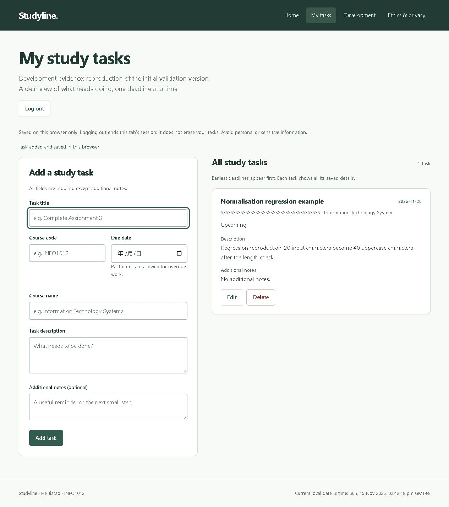
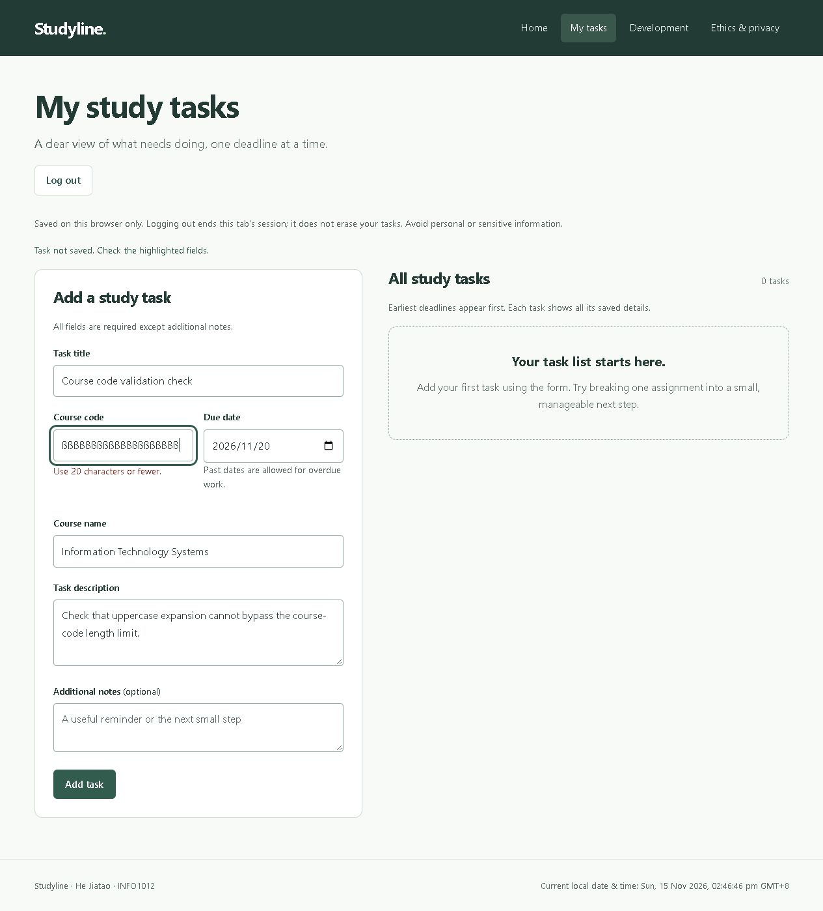
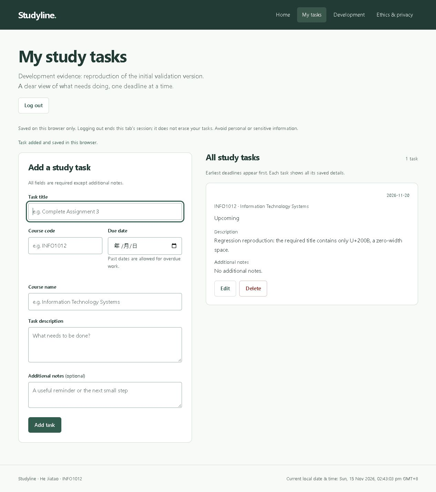
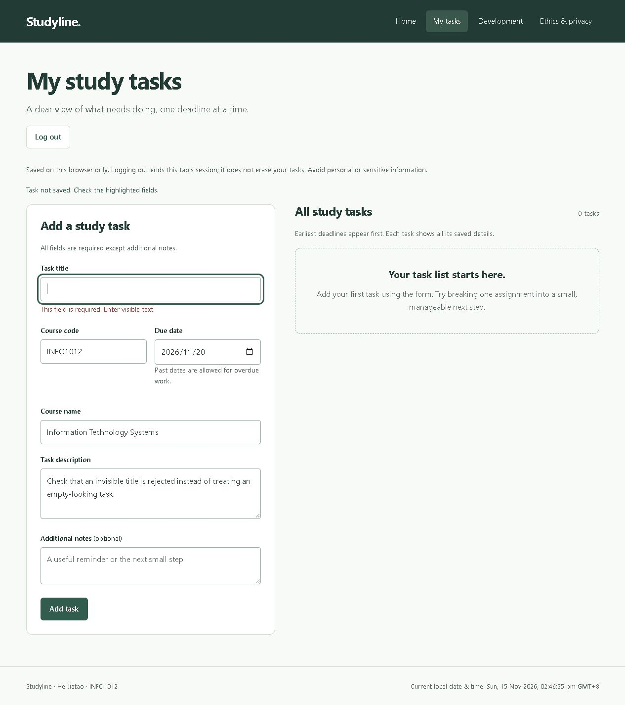

An Agile approach for a small individual project
The Agile Manifesto values working software and responding to change, while still recognising the value of documentation and plans.1 Its principles also support frequent delivery, simplicity and regular reflection.2 For Studyline, I apply these ideas through a small prioritised backlog, working increments and explicit acceptance checks. I do not describe the project as a full Scrum process: this is an individual assignment, without a separate product owner or development team.
The first priority is the required four-page structure and navigation. The next is the complete task workflow: sign in, create, view, update, confirm deletion and sign out. Documentation, a project plan, troubleshooting evidence and the ethics reflection are part of the deliverable, not optional work left until after the website. Additional features are deferred unless they are needed to meet an acceptance criterion.
After each increment, I would check the working page against the assignment rather than only checking whether code has been written. A short daily review would ask: what works, what failed, and what is the next smallest useful change? A final retrospective would compare the plan with the actual work and record improvements. This keeps the method practical for one developer.
Proposed three-week sprint
Plan and actual work are different records. The table is a proposed three-week sprint with weekly review points. It is not a claim that three weeks of development or commits have already occurred. The implementation and evidence for this submission are recorded with their actual dates, starting on 15 November 2026.
| Week | Phase | Planned work | Deliverable and acceptance check |
|---|---|---|---|
| Week 1 | Planning | Extract the assessment requirements; make a prioritised backlog; define the four pages and identify submission requirements. | A requirement checklist and repository structure. Every required feature has a place in the plan; HTML, CSS and JavaScript have separate folders. |
| Week 1 | Analysis | Describe the task data, create/edit/delete flows, validation rules, login scope and local storage limitations. | A task model and acceptance criteria. The model includes all six required task fields; invalid dates and empty required values have defined responses. |
| Week 1 | Design | Plan consistent navigation, a labelled task form, a readable task list, image controls and mobile layouts. | A navigable four-page skeleton. The home page identifies the application; every page can reach the other required pages. |
| Week 2 | Implementation | Build the image cycle, demonstration login, task creation, list, editing, deletion confirmation, persistence and live footer clock. Review each completed flow. | A working increment. A task can be created, edited and deleted by its unique ID; cancelling deletion preserves it; saved records survive a refresh. |
| Week 3 | Testing and Maintenance | Test valid and invalid inputs, direct page access, keyboard use, small screens and storage. Record real defects and fixes; review the reflection and README; prepare the repository ZIP. | A tested release with screenshots and troubleshooting evidence. Required links and assets work; the README explains setup and use, credits and licensing, and contains the repository URL. |
The review points close the loop: Week 1 checks the structure against the brief, Week 2 tests a complete task workflow, and Week 3 checks the release and submission package. A failed check returns to the backlog as a specific correction. Testing also takes place during implementation so that a defect is not carried into the final week unnoticed.
Agile references
- Beck, K. et al. (2001). Manifesto for Agile Software Development.
- Beck, K. et al. (2001). Principles behind the Agile Manifesto.
Troubleshooting: two validation defects
These issues were found while checking the first implementation on 15 November 2026. All recorded discovery and resolution times use Asia/Shanghai (UTC+08:00). The initial source was preserved before correction. The before screenshots below are later reproductions of that preserved initial version, not screenshots claimed to have been captured at the original discovery time. The after screenshots show the corrected application.
The regression run at had five passing tests and two failing tests. After the corrections, the run at passed all seven tests. The checks address the validation result as well as what appears in the browser.
Course-code normalisation bypassed the length limit
Encountered: .
Resolved: .
Reproduction: enter 20 copies of ß (U+00DF) as the course code, and valid values in the other required fields. The initial version accepted the input, then saved 40 S characters. The expected result was rejection because the normalised code exceeded the 20-character limit.




Code that caused the issue
for (const [field, limit] of Object.entries(LIMITS)) {
data[field] = typeof raw[field] === "string" ? raw[field].trim() : "";
if (field !== "notes" && !data[field]) {
errors[field] = "This field is required. Enter a value.";
} else if (data[field].length > limit) {
errors[field] = `Use ${limit} characters or fewer.`;
}
}
data.courseCode = data.courseCode.toUpperCase();Cause and correction
The length check examined the trimmed input before normalisation. JavaScript's uppercase conversion can change the length of a Unicode string: one ß becomes two letters, SS. The final code could therefore be longer than the value that had passed validation. I moved course-code conversion into the validation loop, before checking the length. This makes the rule apply to the value that will actually be stored.
data[field] = typeof raw[field] === "string" ? raw[field].trim() : "";
if (field === "courseCode") data[field] = data[field].toUpperCase();
const hasVisibleText = /[^\s\p{Cf}]/u.test(data[field]);
if (field !== "notes" && !hasVisibleText) {
errors[field] = "This field is required. Enter visible text.";
} else if (data[field].length > limit) {
errors[field] = `Use ${limit} characters or fewer.`;
}Verification: the regression test named course-code length is checked after case normalisation now passes. The browser also rejects the 20-character source input after its uppercase expansion, while an ordinary value such as info1012 is saved as INFO1012.
References: JavaScript String.prototype.toUpperCase(); the project's validateTask function and tests/task-logic.test.cjs. The uppercase behaviour was verified directly with the failing and passing regression runs.
An invisible-only title passed the required-field check
Encountered: .
Resolved: .
Reproduction: use only a zero-width space, U+200B, as the task title and complete the other fields normally. The initial version created a task whose title looked empty. The expected result was a required-field error, because a usable task needs a visible title.




Code that caused the issue
data[field] = typeof raw[field] === "string" ? raw[field].trim() : "";
if (field !== "notes" && !data[field]) {
errors[field] = "This field is required. Enter a value.";
}Cause and correction
The check assumed that trim() removed every character that might look empty. It removes whitespace defined by JavaScript, but it does not remove U+200B. The remaining string had length one and passed the truthiness check. I changed the required-field rule to require at least one character that is neither whitespace nor a Unicode format character. This rejects a format-only title without removing joiners from otherwise visible text, such as a joined emoji.
const hasVisibleText = /[^\s\p{Cf}]/u.test(data[field]);
if (field !== "notes" && !hasVisibleText) {
errors[field] = "This field is required. Enter visible text.";
}Verification: the regression test named required text cannot consist only of invisible formatting characters now passes. The browser displays the title error and leaves the task list unchanged. Ordinary titles and visible text containing joiners remain accepted; notes remain optional.
References: JavaScript String.prototype.trim() and Unicode character class escapes; the project's validation regression test. The edge cases were checked directly rather than assuming that a non-empty string was sufficient.